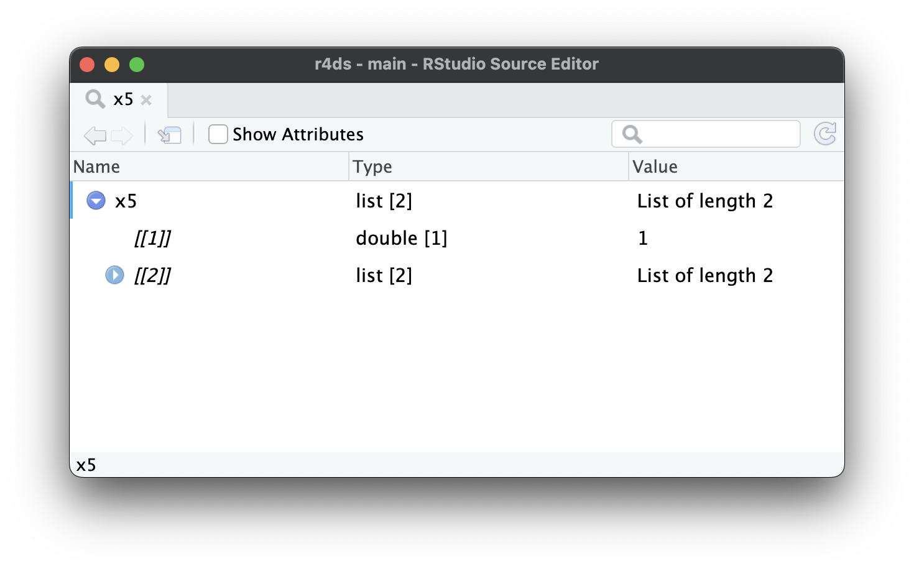

23 Ιεραρχικά δεδομένα
23.1 Εισαγωγή
Σε αυτό το κεφάλαιο, θα μάθετε την τέχνη της ορθογωνοποίησης των δεδομένων (μετατροπή σε μορφή πίνακα): παίρνοντας δηλαδή δεδομένα που είναι κατά βάση ιεραρχικά, ή σε μορφή δέντρου, και μετατρέποντάς τα σε ένα ορθογώνιο πλαίσιο δεδομένων που αποτελείται από γραμμές και στήλες (σαν πίνακας). Αυτό είναι σημαντικό επειδή τα ιεραρχικά δεδομένα συναντώνται αρκετά συχνά, ειδικά όταν εργάζεστε με δεδομένα που προέρχονται από το διαδίκτυο.
Για να μάθετε για την ορθογωνοποίηση, θα πρέπει πρώτα να μάθετε για τις λίστες, τη δομή δεδομένων που καθιστά δυνατή την ύπαρξη ιεραρχικών δεδομένων. Στη συνέχεια, θα μάθετε για δύο κρίσιμες συναρτήσεις του πακέτου tidyr: την tidyr::unnest_longer() και την tidyr::unnest_wider(). Στη συνέχεια, θα σας δείξουμε μερικές περιπτώσεις μελέτης, εφαρμόζοντας αυτές τις απλές συναρτήσεις ξανά και ξανά για την επίλυση πραγματικών προβλημάτων. Θα ολοκληρώσουμε μιλώντας για τα JSON, την πιο συχνή πηγή ιεραρχικών συνόλων δεδομένων και μία συχνή μορφή ανταλλαγής δεδομένων στο διαδίκτυο.
23.1.1 Προαπαιτούμενα
Σε αυτό το κεφάλαιο, θα χρησιμοποιήσουμε πολλές συναρτήσεις από το πακέτο tidyr, ένα βασικό μέλος του tidyverse. Θα χρησιμοποιήσουμε επίσης το πακέτο repurrrsive για να πάρουμε μερικά ενδιαφέροντα σύνολα δεδομένων για εξάσκηση στην ορθογωνοποίηση και θα ολοκληρώσουμε χρησιμοποιώντας το jsonlite για την ανάγνωση αρχείων JSON σε λίστες R.
23.2 Λίστες
Μέχρι στιγμής έχετε εργαστεί με πλαίσια δεδομένων που περιέχουν απλά διανύσματα, όπως ακέραιους, γενικούς αριθμούς, χαρακτήρες, ημερομηνίες/ώρες και παράγοντες. Αυτά τα διανύσματα είναι απλά επειδή είναι ομοιογενή: κάθε στοιχείο είναι του ίδιου τύπου. Εάν θέλετε να αποθηκεύσετε στοιχεία διαφορετικών τύπων στο ίδιο διάνυσμα, θα χρειαστείτε μία λίστα, την οποία δημιουργείτε με την list():
x1 <- list(1:4, "a", TRUE)
x1
#> [[1]]
#> [1] 1 2 3 4
#>
#> [[2]]
#> [1] "a"
#>
#> [[3]]
#> [1] TRUEΕίναι συχνά βολικό να ονομάσετε τα στοιχεία ή τα παιδιά μιας λίστας, κάτι που μπορείτε να κάνετε με τον ίδιο τρόπο όπως ονομάζετε τις στήλες ενός tibble:
x2 <- list(a = 1:2, b = 1:3, c = 1:4)
x2
#> $a
#> [1] 1 2
#>
#> $b
#> [1] 1 2 3
#>
#> $c
#> [1] 1 2 3 4Ακόμη και για αυτές τις πολύ απλές λίστες, η εκτύπωση καταλαμβάνει αρκετό χώρο. Μία χρήσιμη εναλλακτική λύση είναι η str(), η οποίο δημιουργεί μία συμπαγή εμφάνιση της δομής (structure), χωρίς να δίνει έμφαση στα περιεχόμενα:
Όπως μπορείτε να δείτε, η str() εμφανίζει κάθε παιδί της λίστας σε ξεχωριστή γραμμή. Εμφανίζει το όνομα, εάν υπάρχει, μετά μία συντομογραφία του τύπου των δεδομένων, και μετά τις λίγες τιμές από την αρχή.
23.2.1 Ιεραρχία
Οι λίστες μπορούν να περιέχουν οποιοδήποτε είδος αντικειμένου, συμπεριλαμβανομένων άλλων λιστών. Αυτό τις καθιστά κατάλληλες για την αναπαράσταση ιεραρχικών (δενδροειδών) δομών:
Το παραπάνω διαφέρει σημαντικά από την c(), η οποίο δημιουργεί ένα επίπεδο διάνυσμα:
Καθώς οι λίστες γίνονται πιο περίπλοκες, η str() γίνεται πιο χρήσιμη, καθώς σας επιτρέπει να δείτε την ιεραρχία περιληπτικά:
Καθώς οι λίστες γίνονται ακόμη μεγαλύτερες και πιο περίπλοκες, η str() αρχίζει να αποτυγχάνει και θα πρέπει να μεταβείτε στην View()1. Το Σχήμα 23.1 δείχνει το αποτέλεσμα της κλήσης της View(x5). Η λειτουργία προβολής ξεκινά εμφανίζοντας μόνο το ανώτερο επίπεδο της λίστας, αλλά μπορείτε να επεκτείνετε διαδραστικά οποιοδήποτε από τα στοιχεία για να δείτε περισσότερα, όπως φαίνεται στο Σχήμα 23.2. Το RStudio θα σας δείξει επίσης τον κώδικα που χρειάζεστε για να αποκτήσετε πρόσβαση σε αυτό το στοιχείο, όπως στο Σχήμα 23.3. Θα επανέλθουμε στο πώς λειτουργεί αυτός ο κώδικας στην Ενότητα 27.3.


x5[[2]][[2]][[2]].23.2.2 Στήλες λίστας
Λίστες μπορούν επίσης να υπάρχουν μέσα σε ένα tibble, όπου τις ονομάζουμε στήλες λίστας. Οι στήλες λίστας είναι χρήσιμες επειδή σας επιτρέπουν να τοποθετήσετε σε ένα tibble αντικείμενα που συνήθως δεν θα ανήκαν εκεί. Συγκεκριμένα, οι στήλες λίστας χρησιμοποιούνται πολύ στο οικοσύστημα των tidymodels, επειδή σας επιτρέπουν να αποθηκεύετε πράγματα, όπως αποτελέσματα μοντέλων ή επαναδειγματοληψίας, σε ένα πλαίσιο δεδομένων.
Ορίστε ένα απλό παράδειγμα στήλης λίστας:
Δεν υπάρχει τίποτα ιδιαίτερο σχετικά με τις λίστες σε ένα tibble. Συμπεριφέρονται όπως κάθε άλλη στήλη:
df |>
filter(x == 1)
#> # A tibble: 1 × 3
#> x y z
#> <int> <chr> <list>
#> 1 1 a <list [2]>Ο υπολογισμός με στήλες λίστας είναι πιο δύσκολος, αλλά αυτό συμβαίνει επειδή ο υπολογισμός με λίστες είναι γενικά πιο δύσκολος. Θα επανέλθουμε σε αυτό στο Κεφάλαιο 26. Σε αυτό το κεφάλαιο, θα επικεντρωθούμε στην αναδόμηση στηλών λίστας σε κανονικές μεταβλητές, ώστε να μπορείτε να χρησιμοποιήσετε σε αυτές τα υπάρχοντα εργαλεία σας.
Η προεπιλεγμένη μέθοδος εκτύπωσης εμφανίζει απλώς μία κατά προσέγγιση περίληψη των περιεχομένων. Η στήλη της λίστας μπορεί να είναι αυθαίρετα πολύπλοκη, επομένως δεν υπάρχει καλός τρόπος να την εκτυπώσετε. Εάν θέλετε να την δείτε, θα χρειαστεί να τραβήξετε μόνο τη μία στήλη λίστας και να εφαρμόσετε μία από τις τεχνικές που μάθατε παραπάνω, όπως df |> pull(z) |> str() ή df |> pull(z) |> View().
Το να τοποθετήσετε μία λίστα σε μία στήλη ενός data.frame είναι εφικτό, αλλά είναι πολύ πιο περίπλοκο, καθώς το data.frame() αντιμετωπίζει μία λίστα ως μία λίστα με στήλες:
data.frame(x = list(1:3, 3:5))
#> x.1.3 x.3.5
#> 1 1 3
#> 2 2 4
#> 3 3 5Μπορείτε να αναγκάσετε το data.frame() να αντιμετωπίζει μία λίστα ως μία λίστα γραμμών τυλίγοντας τη στη λίστα I(), το αποτέλεσμα όμως δεν εκτυπώνεται ιδιαίτερα καλά:
data.frame(
x = I(list(1:2, 3:5)),
y = c("1, 2", "3, 4, 5")
)
#> x y
#> 1 1, 2 1, 2
#> 2 3, 4, 5 3, 4, 5Είναι πιο εύκολο να χρησιμοποιείτε στήλες λίστας με tibbles, επειδή το tibble() αντιμετωπίζει τις λίστες σαν διανύσματα αλλά και γιατί η μέθοδος εκτύπωσης έχει σχεδιαστεί με γνώμονα τις λίστες.
23.3 Αναδόμηση (Unnest)
Τώρα που μάθατε τα βασικά των λιστών και των στηλών λίστας, ας εξερευνήσουμε πώς μπορείτε να τις μετατρέψετε ξανά σε κανονικές γραμμές και στήλες. Εδώ θα χρησιμοποιήσουμε πολύ απλά δείγματα δεδομένων, ώστε να έχετε τη βασική ιδέα. Στην επόμενη ενότητα θα ασχοληθούμε με πραγματικά δεδομένα.
Οι στήλες λίστας τείνουν να έρχονται σε δύο βασικές μορφές: με ονόματα και χωρίς ονόματα. Όταν τα παιδιά της λίστας ονομάζονται, τείνουν να έχουν τα ίδια ονόματα σε κάθε γραμμή. Για παράδειγμα, στο df1, κάθε στοιχείο της στήλης λίστας y έχει δύο στοιχεία που ονομάζονται a και b. Οι στήλες λίστας με ονόματα αναδομούνται σε στήλες: κάθε ονοματισμένο στοιχείο γίνεται μία νέα στήλη με όνομα.
Όταν τα παιδιά είναι χωρίς όνομα, ο αριθμός των στοιχείων τείνει να διαφέρει από γραμμή σε γραμμή. Για παράδειγμα, στο df2, τα στοιχεία της στήλης λίστας y δεν έχουν όνομα και ποικίλλουν σε μήκος από ένα έως τρία. Οι στήλες λίστας χωρίς ονόματα αναδομούνται σε γραμμές: θα πάρετε μία γραμμή για κάθε παιδί της λίστας.
Το πακέτο tidyr παρέχει δύο συναρτήσεις για αυτές τις δύο περιπτώσεις: την unnest_wider() και unnest_longer(). Οι ακόλουθες ενότητες εξηγούν πώς λειτουργούν.
23.3.1 unnest_wider()
Όταν κάθε γραμμή έχει τον ίδιο αριθμό στοιχείων με τα ίδια ονόματα, όπως στο df1, είναι λογικό κάθε στοιχείο να τοποθετείται στη δική του στήλη με την unnest_wider():
df1 |>
unnest_wider(y)
#> # A tibble: 3 × 3
#> x a b
#> <dbl> <dbl> <dbl>
#> 1 1 11 12
#> 2 2 21 22
#> 3 3 31 32Από προεπιλογή, τα ονόματα των νέων στηλών προέρχονται αποκλειστικά από τα ονόματα των στοιχείων της λίστας, μπορείτε όμως να χρησιμοποιήσετε το όρισμα names_sep για να συνδυάσετε το όνομα της στήλης και το όνομα του στοιχείου. Αυτό είναι χρήσιμο για την αποσαφήνιση επαναλαμβανόμενων ονομάτων.
df1 |>
unnest_wider(y, names_sep = "_")
#> # A tibble: 3 × 3
#> x y_a y_b
#> <dbl> <dbl> <dbl>
#> 1 1 11 12
#> 2 2 21 22
#> 3 3 31 32
23.3.2 unnest_longer()
Όταν κάθε γραμμή περιέχει μία λίστα χωρίς ονόματα, είναι πιο λογικό να τοποθετήσετε κάθε στοιχείο στη δική του γραμμή με την unnest_longer():
df2 |>
unnest_longer(y)
#> # A tibble: 6 × 2
#> x y
#> <dbl> <dbl>
#> 1 1 11
#> 2 1 12
#> 3 1 13
#> 4 2 21
#> 5 3 31
#> 6 3 32Σημειώστε πως η x αντιγράφεται για κάθε στοιχείο μέσα στην y: έτσι παίρνουμε μία γραμμή εξόδου για κάθε στοιχείο μέσα στη στήλη λίστα. Τι συμβαίνει όμως εάν ένα από τα στοιχεία είναι κενό, όπως στο παρακάτω παράδειγμα;
df6 <- tribble(
~x, ~y,
"a", list(1, 2),
"b", list(3),
"c", list()
)
df6 |> unnest_longer(y)
#> # A tibble: 3 × 2
#> x y
#> <chr> <dbl>
#> 1 a 1
#> 2 a 2
#> 3 b 3Λαμβάνουμε μηδέν γραμμές στην έξοδο, οπότε ουσιαστικά η γραμμή εξαφανίζεται. Σε περίπτωση που θέλετε να κρατήσετε αυτήν τη γραμμή, προσθέτοντας NA στη y, ορίστε το keep_empty = TRUE.
23.3.3 Αντιφατικοί τύποι δεδομένων
Τι συμβαίνει εάν αφαιρέσετε μία στήλη λίστας που περιέχει διαφορετικούς τύπους διανυσμάτων;
Για παράδειγμα, πάρτε το ακόλουθο σύνολο δεδομένων όπου η στήλη λίστας y περιέχει δύο αριθμούς, έναν χαρακτήρα και μία τιμή λογικού τύπου, που κανονικά δεν μπορούν να συγχωνευθούν σε μία στήλη.
Η unnest_longer() διατηρεί πάντα το σύνολο των στηλών αμετάβλητο, ενώ αλλάζει τον αριθμό των γραμμών. Τι συμβαίνει λοιπόν;
Πώς η unnest_longer() παράγει πέντε γραμμές ενώ διατηρεί τα πάντα στην y;
df4 |>
unnest_longer(y)
#> # A tibble: 4 × 2
#> x y
#> <chr> <list>
#> 1 a <dbl [1]>
#> 2 b <chr [1]>
#> 3 b <lgl [1]>
#> 4 b <dbl [1]>Όπως μπορείτε να δείτε, η έξοδος περιέχει μία στήλη λίστας, αλλά κάθε στοιχείο της στήλης λίστας περιέχει ένα μόνο στοιχείο. Επειδή η unnest_longer() δεν μπορεί να βρει έναν κοινό τύπο διανύσματος, διατηρεί τους αρχικούς τύπους σε μία στήλη λίστας. Ίσως αναρωτηθείτε αν αυτό παραβαίνει τον κανόνα ότι κάθε στοιχείο μιας στήλης πρέπει να είναι του ίδιου τύπου. Δεν την παραβαίνει: κάθε στοιχείο είναι μία λίστα, παρόλο που τα περιεχόμενα είναι διαφορετικών τύπων.
Η αντιμετώπιση αντιφατικών τύπων είναι μία πρόκληση και οι λεπτομέρειες εξαρτώνται από την ακριβή φύση του προβλήματος και τους στόχους σας. Πιθανότατα όμως θα χρειαστείτε εργαλεία που αναφέρονται στο Κεφάλαιο 26.
23.3.4 Λοιπές συναρτήσεις
Το πακέτο tidyr έχει και μερικές άλλες χρήσιμες συναρτήσεις ορθογωνοποίησης που δεν θα καλύψουμε σε αυτό το βιβλίο:
- Η
unnest_auto()επιλέγει αυτόματα μεταξύ τωνunnest_longer()καιunnest_wider()με βάση τη δομή της στήλης λίστας. Είναι εξαιρετική για γρήγορη εξερεύνηση των δεδομένων, τελικά όμως είναι κακή ιδέα γιατί δεν σας αναγκάζει να κατανοήσετε πώς είναι δομημένα τα δεδομένα σας, και κάνει τον κώδικά σας πιο δυσνόητο. - Η
unnest()επεκτείνει και τις γραμμές και τις στήλες. Είναι χρήσιμη όταν έχετε μία στήλη λίστας που περιέχει μία δισδιάστατη δομή, όπως ένα πλαίσιο δεδομένων, δομή την οποία δεν συναντάτε σε αυτό το βιβλίο, αλλά μπορεί να συναντήσετε εάν χρησιμοποιήσετε το οικοσύστημα των tidymodels.
Είναι καλό να γνωρίζετε αυτές τις συναρτήσεις καθώς μπορεί να τις συναντήσετε όταν διαβάζετε τον κώδικα άλλων ή όταν αντιμετωπίζετε πιο σπάνιες προκλήσεις ορθογωνοποίησης.
23.3.5 Ασκήσεις
Τι συμβαίνει όταν χρησιμοποιείτε την
unnest_wider()με στήλες λίστας χωρίς ονόματα, όπως στοdf2;
Ποιο όρισμα είναι τώρα απαραίτητο;
Τι συμβαίνει με τις κενές τιμές;Τι συμβαίνει όταν χρησιμοποιείτε την
unnest_longer()με στήλες λίστας με ονόματα, όπως στοdf1;
Ποιες πρόσθετες πληροφορίες λαμβάνετε στην έξοδο;
Πώς μπορείτε να αποκρύψετε αυτή την επιπλέον λεπτομέρεια;-
Κατά καιρούς συναντάτε πλαίσια δεδομένων με πολλαπλές στήλες λίστας με ευθυγραμμισμένες τιμές. Για παράδειγμα, στο ακόλουθο πλαίσιο δεδομένων, οι τιμές των
yκαιzείναι ευθυγραμμισμένες (δηλαδή, ηyκαι ηzθα έχουν πάντα το ίδιο μήκος σε μία γραμμή και η πρώτη τιμή τηςyαντιστοιχεί στη πρώτη τιμή τηςz). Τι συμβαίνει εάν εφαρμόσετε δύο φορές τηνunnest_longer()σε αυτό το πλαίσιο δεδομένων;
Πώς μπορείτε να διατηρήσετε τη σχέση μεταξύxκαιy;
(Υπόδειξη: διαβάστε προσεκτικά τις αντίστοιχες οδηγίες).
23.4 Μελέτες περίπτωσης
Η κύρια διαφορά μεταξύ των απλών παραδειγμάτων που χρησιμοποιήσαμε παραπάνω και των πραγματικών δεδομένων είναι ότι τα πραγματικά δεδομένα περιέχουν συνήθως πολλαπλά επίπεδα ένθεσης, που απαιτούν πολλαπλές εφαρμογές της unnest_longer() και/ή της unnest_wider(). Για να το δείξουμε αυτό στην πράξη, η ενότητα αυτή λειτουργεί μέσω τριών πραγματικών προκλήσεων ορθογωνοποίησης χρησιμοποιώντας σύνολα δεδομένων από το πακέτο repurrrsive.
23.4.1 Δεδομένα με μεγάλο πλάτος
Θα ξεκινήσουμε με την gh_repos. Αυτή είναι μία λίστα που περιέχει δεδομένα σχετικά με μία συλλογή αποθετηρίων στο GitHub, τα οποία ανακτήθηκαν χρησιμοποιώντας το API του GitHub. Είναι μία εις βάθος ένθετη λίστα, κι επομένως είναι δύσκολο να δείξουμε τη δομή της σε αυτό το βιβλίο. Πριν συνεχίσουμε, συνιστούμε να την εξερευνήσετε λίγο μόνοι σας με την View(gh_repos).
Η gh_repos είναι μία λίστα, αλλά τα εργαλεία μας λειτουργούν με στήλες λίστας, οπότε θα ξεκινήσουμε βάζοντάς την σε ένα tibble. Ονομάζουμε αυτήν τη στήλη json για λόγους που θα δούμε αργότερα.
repos <- tibble(json = gh_repos)
repos
#> # A tibble: 6 × 1
#> json
#> <list>
#> 1 <list [30]>
#> 2 <list [30]>
#> 3 <list [30]>
#> 4 <list [26]>
#> 5 <list [30]>
#> 6 <list [30]>Αυτό το tibble περιέχει 6 γραμμές, μία γραμμή για κάθε παιδί της gh_repos. Κάθε γραμμή περιέχει μία λίστα χωρίς ονόματα, με 26 ή 30 γραμμές. Δεδομένου ότι αυτά είναι χωρίς όνομα, θα ξεκινήσουμε με την unnest_longer() για να βάλουμε κάθε παιδί στη δική του γραμμή:
repos |>
unnest_longer(json)
#> # A tibble: 176 × 1
#> json
#> <list>
#> 1 <named list [68]>
#> 2 <named list [68]>
#> 3 <named list [68]>
#> 4 <named list [68]>
#> 5 <named list [68]>
#> 6 <named list [68]>
#> # ℹ 170 more rowsΜε μία πρώτη ματιά, μπορεί να φαίνεται ότι δεν έχουμε βελτιώσει την κατάσταση: ενώ έχουμε περισσότερες γραμμές (176 αντί για 6), κάθε στοιχείο της json εξακολουθεί να είναι μία λίστα. Ωστόσο, υπάρχει μία σημαντική διαφορά: τώρα κάθε στοιχείο είναι μία λίστα με ονόματα, ώστε να μπορούμε να χρησιμοποιήσουμε την unnest_wider() για να βάλουμε κάθε στοιχείο στη δική του στήλη:
repos |>
unnest_longer(json) |>
unnest_wider(json)
#> # A tibble: 176 × 68
#> id name full_name owner private html_url
#> <int> <chr> <chr> <list> <lgl> <chr>
#> 1 61160198 after gaborcsardi/after <named list> FALSE https://github…
#> 2 40500181 argufy gaborcsardi/argu… <named list> FALSE https://github…
#> 3 36442442 ask gaborcsardi/ask <named list> FALSE https://github…
#> 4 34924886 baseimports gaborcsardi/base… <named list> FALSE https://github…
#> 5 61620661 citest gaborcsardi/cite… <named list> FALSE https://github…
#> 6 33907457 clisymbols gaborcsardi/clis… <named list> FALSE https://github…
#> # ℹ 170 more rows
#> # ℹ 62 more variables: description <chr>, fork <lgl>, url <chr>, …Αυτό λειτούργησε, αλλά το αποτέλεσμα δεν είναι με το μέρος μας: υπάρχουν τόσες πολλές στήλες που η tibble δεν τις εκτυπώνει όλες! Μπορούμε να τις δούμε με την names(). Εδώ βλέπουμε τις πρώτα 10:
repos |>
unnest_longer(json) |>
unnest_wider(json) |>
names() |>
head(10)
#> [1] "id" "name" "full_name" "owner" "private"
#> [6] "html_url" "description" "fork" "url" "forks_url"Ας κρατήσουμε μερικές στήλες που φαίνονται ενδιαφέρουσες:
repos |>
unnest_longer(json) |>
unnest_wider(json) |>
select(id, full_name, owner, description)
#> # A tibble: 176 × 4
#> id full_name owner description
#> <int> <chr> <list> <chr>
#> 1 61160198 gaborcsardi/after <named list [17]> Run Code in the Backgro…
#> 2 40500181 gaborcsardi/argufy <named list [17]> Declarative function ar…
#> 3 36442442 gaborcsardi/ask <named list [17]> Friendly CLI interactio…
#> 4 34924886 gaborcsardi/baseimports <named list [17]> Do we get warnings for …
#> 5 61620661 gaborcsardi/citest <named list [17]> Test R package and repo…
#> 6 33907457 gaborcsardi/clisymbols <named list [17]> Unicode symbols for CLI…
#> # ℹ 170 more rowsΜπορείτε να χρησιμοποιήσετε το παραπάνω για να κατανοήσετε το πως δομήθηκε η gh_repos: κάθε παιδί ήταν και ένας χρήστης του GitHub στον οποίο αντιστοιχεί μία λίστα, η οποία περιέχει έως και 30 αποθετήρια που αυτός ο χρήστης δημιούργησε.
Η owner είναι μία άλλη στήλη λίστας και δεδομένου ότι περιέχει λίστες με ονόματα, μπορούμε να χρησιμοποιήσουμε την unnest_wider() για να φτάσουμε στις τιμές:
repos |>
unnest_longer(json) |>
unnest_wider(json) |>
select(id, full_name, owner, description) |>
unnest_wider(owner)
#> Error in `unnest_wider()`:
#> ! Can't duplicate names between the affected columns and the original
#> data.
#> ✖ These names are duplicated:
#> ℹ `id`, from `owner`.
#> ℹ Use `names_sep` to disambiguate using the column name.
#> ℹ Or use `names_repair` to specify a repair strategy.Ωχ, αυτή η στήλη λίστας περιέχει επίσης μία στήλη id και δεν μπορούμε να έχουμε δύο στήλες με το όνομα id στο ίδιο πλαίσιο δεδομένων. Όπως προτείνεται, ας χρησιμοποιήσουμε την names_sep για να επιλύσουμε το πρόβλημα:
repos |>
unnest_longer(json) |>
unnest_wider(json) |>
select(id, full_name, owner, description) |>
unnest_wider(owner, names_sep = "_")
#> # A tibble: 176 × 20
#> id full_name owner_login owner_id owner_avatar_url
#> <int> <chr> <chr> <int> <chr>
#> 1 61160198 gaborcsardi/after gaborcsardi 660288 https://avatars.gith…
#> 2 40500181 gaborcsardi/argufy gaborcsardi 660288 https://avatars.gith…
#> 3 36442442 gaborcsardi/ask gaborcsardi 660288 https://avatars.gith…
#> 4 34924886 gaborcsardi/baseimports gaborcsardi 660288 https://avatars.gith…
#> 5 61620661 gaborcsardi/citest gaborcsardi 660288 https://avatars.gith…
#> 6 33907457 gaborcsardi/clisymbols gaborcsardi 660288 https://avatars.gith…
#> # ℹ 170 more rows
#> # ℹ 15 more variables: owner_gravatar_id <chr>, owner_url <chr>, …Αυτό επιστρέφει ένα άλλο πλατύ σύνολο δεδομένων. Μπορείτε όμως να καταλάβετε ότι η στήλη owner φαίνεται να περιέχει πολλά πρόσθετα δεδομένα σχετικά με το άτομο που “κατέχει” το αποθετήριο.
23.4.2 Σχεσιακά δεδομένα
Τα ένθετα δεδομένα χρησιμοποιούνται μερικές φορές για την αναπαράσταση δεδομένων που συνήθως θα διανέμαμε σε πολλαπλά πλαίσια δεδομένων. Για παράδειγμα, πάρτε την got_chars που περιέχει δεδομένα σχετικά με χαρακτήρες που εμφανίζονται στα βιβλία και τις τηλεοπτικές σειρές του Game of Thrones. Όπως και η gh_repos, έτσι και αυτή είναι μία λίστα, οπότε ξεκινάμε μετατρέποντάς την σε στήλη λίστας ενός tibble:
chars <- tibble(json = got_chars)
chars
#> # A tibble: 30 × 1
#> json
#> <list>
#> 1 <named list [18]>
#> 2 <named list [18]>
#> 3 <named list [18]>
#> 4 <named list [18]>
#> 5 <named list [18]>
#> 6 <named list [18]>
#> # ℹ 24 more rowsΗ στήλη json περιέχει στοιχεία με ονόματα, επομένως θα ξεκινήσουμε διευρύνοντας την:
chars |>
unnest_wider(json)
#> # A tibble: 30 × 18
#> url id name gender culture born
#> <chr> <int> <chr> <chr> <chr> <chr>
#> 1 https://www.anapio… 1022 Theon Greyjoy Male "Ironborn" "In 278 AC or …
#> 2 https://www.anapio… 1052 Tyrion Lannist… Male "" "In 273 AC, at…
#> 3 https://www.anapio… 1074 Victarion Grey… Male "Ironborn" "In 268 AC or …
#> 4 https://www.anapio… 1109 Will Male "" ""
#> 5 https://www.anapio… 1166 Areo Hotah Male "Norvoshi" "In 257 AC or …
#> 6 https://www.anapio… 1267 Chett Male "" "At Hag's Mire"
#> # ℹ 24 more rows
#> # ℹ 12 more variables: died <chr>, alive <lgl>, titles <list>, …Και επιλέγοντας μερικές στήλες για πιο εύκολη ανάγνωση:
characters <- chars |>
unnest_wider(json) |>
select(id, name, gender, culture, born, died, alive)
characters
#> # A tibble: 30 × 7
#> id name gender culture born died
#> <int> <chr> <chr> <chr> <chr> <chr>
#> 1 1022 Theon Greyjoy Male "Ironborn" "In 278 AC or 27… ""
#> 2 1052 Tyrion Lannister Male "" "In 273 AC, at C… ""
#> 3 1074 Victarion Greyjoy Male "Ironborn" "In 268 AC or be… ""
#> 4 1109 Will Male "" "" "In 297 AC, at…
#> 5 1166 Areo Hotah Male "Norvoshi" "In 257 AC or be… ""
#> 6 1267 Chett Male "" "At Hag's Mire" "In 299 AC, at…
#> # ℹ 24 more rows
#> # ℹ 1 more variable: alive <lgl>Αυτό το σύνολο δεδομένων περιέχει επίσης πολλές στήλες λίστας:
chars |>
unnest_wider(json) |>
select(id, where(is.list))
#> # A tibble: 30 × 8
#> id titles aliases allegiances books povBooks tvSeries playedBy
#> <int> <list> <list> <list> <list> <list> <list> <list>
#> 1 1022 <chr [2]> <chr [4]> <chr [1]> <chr [3]> <chr> <chr> <chr>
#> 2 1052 <chr [2]> <chr [11]> <chr [1]> <chr [2]> <chr> <chr> <chr>
#> 3 1074 <chr [2]> <chr [1]> <chr [1]> <chr [3]> <chr> <chr> <chr>
#> 4 1109 <chr [1]> <chr [1]> <NULL> <chr [1]> <chr> <chr> <chr>
#> 5 1166 <chr [1]> <chr [1]> <chr [1]> <chr [3]> <chr> <chr> <chr>
#> 6 1267 <chr [1]> <chr [1]> <NULL> <chr [2]> <chr> <chr> <chr>
#> # ℹ 24 more rowsΑς εξερευνήσουμε τη στήλη titles. Είναι μία στήλη λίστας χωρίς ονόματα, επομένως θα την αναδομήσουμε σε γραμμές:
chars |>
unnest_wider(json) |>
select(id, titles) |>
unnest_longer(titles)
#> # A tibble: 59 × 2
#> id titles
#> <int> <chr>
#> 1 1022 Prince of Winterfell
#> 2 1022 Lord of the Iron Islands (by law of the green lands)
#> 3 1052 Acting Hand of the King (former)
#> 4 1052 Master of Coin (former)
#> 5 1074 Lord Captain of the Iron Fleet
#> 6 1074 Master of the Iron Victory
#> # ℹ 53 more rowsΊσως να περιμένατε να δείτε τα δεδομένα στον δικό τους, ξεχωριστό πίνακα, καθώς θα ήταν εύκολο να ενωθούν με τα δεδομένα χαρακτήρων όπως απαιτείται. Ας δοκιμάσουμε αυτή την επιλογή, μιας και απαιτεί πολύ λίγα βήματα καθαρισμού των δεδομένων: αφαιρούμε τις γραμμές που περιέχουν κενές συμβολοσειρές και μετονομάζουμε την στήλη titles σε title, καθώς κάθε γραμμή περιέχει πλέον μόνο έναν τίτλο.
titles <- chars |>
unnest_wider(json) |>
select(id, titles) |>
unnest_longer(titles) |>
filter(titles != "") |>
rename(title = titles)
titles
#> # A tibble: 52 × 2
#> id title
#> <int> <chr>
#> 1 1022 Prince of Winterfell
#> 2 1022 Lord of the Iron Islands (by law of the green lands)
#> 3 1052 Acting Hand of the King (former)
#> 4 1052 Master of Coin (former)
#> 5 1074 Lord Captain of the Iron Fleet
#> 6 1074 Master of the Iron Victory
#> # ℹ 46 more rowsΘα μπορούσατε να φανταστείτε την δημιουργία ενός πίνακα σαν αυτόν για κάθε μία από τις στήλες λίστας και στη συνέχεια να χρησιμοποιήσετε συναρτήσεις ένωσης για να τις συνδυάσετε με τα δεδομένα χαρακτήρων με όποιον τρόπο τα χρειάζεστε.
23.4.3 Πολυεπίπεδη ένθεση
Θα ολοκληρώσουμε αυτές τις μελέτες περίπτωσης με μία στήλη λίστας με αρκετό βάθος ένθεσης που απαιτεί επαναλαμβανόμενους γύρους εφαρμογής της unnest_wider() και της unnest_longer() για να αναδομηθεί: την gmaps_cities. Βρίσκεται σε ένα tibble δύο στηλών που περιέχει πέντε ονόματα πόλεων και τα αποτελέσματα της χρήσης του geocoding API της Google για τον προσδιορισμό της τοποθεσίας τους:
gmaps_cities
#> # A tibble: 5 × 2
#> city json
#> <chr> <list>
#> 1 Houston <named list [2]>
#> 2 Washington <named list [2]>
#> 3 New York <named list [2]>
#> 4 Chicago <named list [2]>
#> 5 Arlington <named list [2]>Η json είναι μία στήλη λίστας με εσωτερικά ονόματα, οπότε ξεκινάμε με ένα unnest_wider():
gmaps_cities |>
unnest_wider(json)
#> # A tibble: 5 × 3
#> city results status
#> <chr> <list> <chr>
#> 1 Houston <list [1]> OK
#> 2 Washington <list [2]> OK
#> 3 New York <list [1]> OK
#> 4 Chicago <list [1]> OK
#> 5 Arlington <list [2]> OKΑυτό μας δίνει τις στήλες status και results. Θα απορρίψουμε τη στήλη status επειδή όλες οι τιμές της είναι ΟΚ. Σε μία πραγματική ανάλυση, θα θέλατε επίσης να καταγράψετε όλες τις γραμμές όπου status != "OK και να καταλάβετε τι πήγε στραβά. Η results είναι μία λίστα χωρίς ονόματα, με ένα ή δύο στοιχεία (θα δούμε το γιατί σύντομα) οπότε θα την αναδομήσουμε σε γραμμές:
gmaps_cities |>
unnest_wider(json) |>
select(-status) |>
unnest_longer(results)
#> # A tibble: 7 × 2
#> city results
#> <chr> <list>
#> 1 Houston <named list [5]>
#> 2 Washington <named list [5]>
#> 3 Washington <named list [5]>
#> 4 New York <named list [5]>
#> 5 Chicago <named list [5]>
#> 6 Arlington <named list [5]>
#> # ℹ 1 more rowΤώρα η results είναι μία λίστα με ονόματα, επομένως θα χρησιμοποιήσουμε την unnest_wider():
locations <- gmaps_cities |>
unnest_wider(json) |>
select(-status) |>
unnest_longer(results) |>
unnest_wider(results)
locations
#> # A tibble: 7 × 6
#> city address_components formatted_address geometry
#> <chr> <list> <chr> <list>
#> 1 Houston <list [4]> Houston, TX, USA <named list [4]>
#> 2 Washington <list [2]> Washington, USA <named list [4]>
#> 3 Washington <list [4]> Washington, DC, USA <named list [4]>
#> 4 New York <list [3]> New York, NY, USA <named list [4]>
#> 5 Chicago <list [4]> Chicago, IL, USA <named list [4]>
#> 6 Arlington <list [4]> Arlington, TX, USA <named list [4]>
#> # ℹ 1 more row
#> # ℹ 2 more variables: place_id <chr>, types <list>Τώρα μπορούμε να δούμε γιατί δύο πόλεις έλαβαν δύο αποτελέσματα (δηλαδή δύο στοιχεία στη στήλη results): H τιμή “Washington” αντιστοιχήθηκε με το “state of Washington” και με το “Washington DC” ενώ η τιμή “Arlington” αντιστοιχήθηκε με το “Arlington, Virginia” και το “Arlington, Texas”.
Υπάρχουν μερικές διαφορετικές κατευθύνσεις που θα μπορούσαμε να πάρουμε τώρα. Ίσως θέλουμε να προσδιορίσουμε την ακριβή τοποθεσία της αντιστοίχισης, η οποία είναι αποθηκευμένη στη στήλη λίστας geometry:
locations |>
select(city, formatted_address, geometry) |>
unnest_wider(geometry)
#> # A tibble: 7 × 6
#> city formatted_address bounds location location_type
#> <chr> <chr> <list> <list> <chr>
#> 1 Houston Houston, TX, USA <named list [2]> <named list> APPROXIMATE
#> 2 Washington Washington, USA <named list [2]> <named list> APPROXIMATE
#> 3 Washington Washington, DC, USA <named list [2]> <named list> APPROXIMATE
#> 4 New York New York, NY, USA <named list [2]> <named list> APPROXIMATE
#> 5 Chicago Chicago, IL, USA <named list [2]> <named list> APPROXIMATE
#> 6 Arlington Arlington, TX, USA <named list [2]> <named list> APPROXIMATE
#> # ℹ 1 more row
#> # ℹ 1 more variable: viewport <list>Το παραπάνω μας δίνει τις νέες στήλες λίστας bounds (όρια) (μια ορθογώνια περιοχή) και location (θέση) (ένα σημείο). Μπορούμε να αναδομήσουμε την location για να δούμε το γεωγραφικό πλάτος (lat) και το γεωγραφικό μήκος (lng):
locations |>
select(city, formatted_address, geometry) |>
unnest_wider(geometry) |>
unnest_wider(location)
#> # A tibble: 7 × 7
#> city formatted_address bounds lat lng location_type
#> <chr> <chr> <list> <dbl> <dbl> <chr>
#> 1 Houston Houston, TX, USA <named list [2]> 29.8 -95.4 APPROXIMATE
#> 2 Washington Washington, USA <named list [2]> 47.8 -121. APPROXIMATE
#> 3 Washington Washington, DC, USA <named list [2]> 38.9 -77.0 APPROXIMATE
#> 4 New York New York, NY, USA <named list [2]> 40.7 -74.0 APPROXIMATE
#> 5 Chicago Chicago, IL, USA <named list [2]> 41.9 -87.6 APPROXIMATE
#> 6 Arlington Arlington, TX, USA <named list [2]> 32.7 -97.1 APPROXIMATE
#> # ℹ 1 more row
#> # ℹ 1 more variable: viewport <list>Η αναδόμηση της bounds απαιτεί μερικά ακόμη βήματα:
locations |>
select(city, formatted_address, geometry) |>
unnest_wider(geometry) |>
# εστιάστε στις μεταβλητές που μας ενδιαφέρουν
select(!location:viewport) |>
unnest_wider(bounds)
#> # A tibble: 7 × 4
#> city formatted_address northeast southwest
#> <chr> <chr> <list> <list>
#> 1 Houston Houston, TX, USA <named list [2]> <named list [2]>
#> 2 Washington Washington, USA <named list [2]> <named list [2]>
#> 3 Washington Washington, DC, USA <named list [2]> <named list [2]>
#> 4 New York New York, NY, USA <named list [2]> <named list [2]>
#> 5 Chicago Chicago, IL, USA <named list [2]> <named list [2]>
#> 6 Arlington Arlington, TX, USA <named list [2]> <named list [2]>
#> # ℹ 1 more rowΣτη συνέχεια μετονομάζουμε τις southwest και northeast (τις γωνίες του ορθογωνίου) ώστε να μπορούμε να χρησιμοποιήσουμε το names_sep για να δημιουργήσουμε σύντομα αλλά εύκολα να θυμάστε ονόματα:
locations |>
select(city, formatted_address, geometry) |>
unnest_wider(geometry) |>
select(!location:viewport) |>
unnest_wider(bounds) |>
rename(ne = northeast, sw = southwest) |>
unnest_wider(c(ne, sw), names_sep = "_")
#> # A tibble: 7 × 6
#> city formatted_address ne_lat ne_lng sw_lat sw_lng
#> <chr> <chr> <dbl> <dbl> <dbl> <dbl>
#> 1 Houston Houston, TX, USA 30.1 -95.0 29.5 -95.8
#> 2 Washington Washington, USA 49.0 -117. 45.5 -125.
#> 3 Washington Washington, DC, USA 39.0 -76.9 38.8 -77.1
#> 4 New York New York, NY, USA 40.9 -73.7 40.5 -74.3
#> 5 Chicago Chicago, IL, USA 42.0 -87.5 41.6 -87.9
#> 6 Arlington Arlington, TX, USA 32.8 -97.0 32.6 -97.2
#> # ℹ 1 more rowΣημειώστε πώς αφαιρούμε δύο στήλες ταυτόχρονα, παρέχοντας ένα διάνυσμα ονομάτων μεταβλητών στην unnest_wider().
Μόλις ανακαλύψετε τη διαδρομή για να φτάσετε στα στοιχεία που σας ενδιαφέρουν, μπορείτε να τα εξάγετε απευθείας χρησιμοποιώντας μία άλλη συνάρτηση του πακέτου tidyr, την hoist():
Εάν αυτές οι μελέτες περίπτωσης σας έχουν ανοίξει την όρεξη για περισσότερες πραγματικές εφαρμογές της ορθογωνοποίησης, μπορείτε να δείτε μερικά ακόμη παραδείγματα εκτελώντας το vignette("rectangling", package = "tidyr").
23.4.4 Ασκήσεις
Υπολογίστε κατά προσέγγιση πότε δημιουργήθηκε η
gh_repos. Γιατί μπορείτε να υπολογίσετε μόνο κατά προσέγγιση την ημερομηνία;Η στήλη
ownerτουgh_repoπεριέχει πολλές διπλότυπες πληροφορίες, επειδή κάθε κάτοχος (owner) μπορεί να έχει πολλαπλά αποθετήρια. Μπορείτε να δημιουργήσετε ένα πλαίσιο δεδομένωνownersπου περιέχει μία γραμμή για κάθε κάτοχο;
(Συμβουλή: λειτουργεί ηdistinct()μεστήλες λίστας;)Ακολουθήστε τα βήματα που χρησιμοποιήθηκαν για το
titlesγια να δημιουργήσετε παρόμοιους πίνακες για τα ψευδώνυμα, τις υποθέσεις, τα βιβλία και τις τηλεοπτικές σειρές για τους χαρακτήρες του Game of Thrones.-
Εξηγήστε τον ακόλουθο κώδικα γραμμή προς γραμμή. Γιατί είναι ενδιαφέρον;
Γιατί λειτουργεί για τηνgot_chars, αλλά μπορεί να μην λειτουργεί γενικά;tibble(json = got_chars) |> unnest_wider(json) |> select(id, where(is.list)) |> pivot_longer( where(is.list), names_to = "name", values_to = "value" ) |> unnest_longer(value) Στο
gmaps_cities, τι περιέχει ηaddress_components;
Γιατί το μήκος (length) ποικίλλει μεταξύ γραμμών;
Αναδομήστε το κατάλληλα για να το καταλάβετε. (Συμβουλή: Ηtypesφαίνεται να περιέχει πάντα δύο στοιχεία. Διευκολύνει ηunnest_wider()την εργασία σας σε σχέση με τηνunnest_longer();).
23.5 JSON
Όλες οι μελέτες περίπτωσης στην προηγούμενη ενότητα προέρχονται από αρχεία JSON που βρίσκονται εκεί έξω. Το JSON είναι συντομογραφία του javascript object notation και είναι ο τρόπος με τον οποίο τα περισσότερα API στο διαδίκτυο επιστρέφουν δεδομένα. Είναι σημαντικό να το κατανοήσουμε γιατί, ενώ οι τύποι δεδομένων ενός JSON και της R είναι αρκετά παρόμοιοι, δεν υπάρχει 1-προς-1 αντιστοίχιση, επομένως είναι καλό να τα κατανοήσουμε για περίπτωση όπου τα πράγματα πάνε στραβά.
23.5.1 Τύποι δεδομένων
Το JSON είναι μία απλή μορφή δεδομένων που έχει σχεδιαστεί για να διαβάζεται και να γράφεται εύκολα από μηχανές και όχι από ανθρώπους. Διαθέτει έξι βασικούς τύπους δεδομένων. Τέσσερα από αυτά είναι βαθμωτά μεγέθη:
- Ο απλούστερος τύπος είναι το κενό (
null) που παίζει τον ίδιο ρόλο με τοNAστην R. Αντιπροσωπεύει την απουσία δεδομένων. - Μία συμβολοσειρά μοιάζει πολύ με μία συμβολοσειρά στην R, αλλά πρέπει πάντα να χρησιμοποιείται με διπλά εισαγωγικά.
- Ένας αριθμός είναι παρόμοιος με τους αριθμούς της R: μπορούν να χρησιμοποιούν ακέραιο (π.χ. 123), δεκαδικό (π.χ. 123,45) ή επιστημονικό (π.χ. 1.23e3) συμβολισμό. Το JSON δεν υποστηρίζει τιμές
Inf,-InfήNaN. - Ένα λογικό διάνυσμα είναι παρόμοιο με τα
TRUEκαιFALSEτης R, αλλά χρησιμοποιεί πεζάtrueκαιfalse.
Οι συμβολοσειρές, οι αριθμοί και τα λογικά διανύσματα των JSON μοιάζουν αρκετά με τους χαρακτήρες, τα αριθμητικά και τα λογικά διανύσματα του R. Η κύρια διαφορά είναι ότι οι βαθμίδες των JSON μπορούν να αντιπροσωπεύουν μόνο μία τιμή. Για να αναπαραστήσετε πολλαπλές τιμές πρέπει να χρησιμοποιήσετε έναν από τους δύο εναπομείναντες τύπους: πίνακες (arrays) και αντικείμενα.
Τόσο οι πίνακες όσο και τα αντικείμενα είναι παρόμοια με τις λίστες στην R. Η διαφορά είναι στο εάν ονομάζονται ή όχι. Ένας πίνακας είναι σαν μία λίστα χωρίς ονόματα και γράφεται με []. Για παράδειγμα, το [1, 2, 3] είναι ένας πίνακας που περιέχει 3 αριθμούς και το [null, 1, "string", false] είναι ένας πίνακας που περιέχει ένα κενό, έναν αριθμό, μία συμβολοσειρά και ένα λογικό διάνυσμα. Ένα αντικείμενο είναι σαν μία λίστα με ονόματα και γράφεται με {}. Τα ονόματα (κλειδιά στην ορολογία των JSON) είναι συμβολοσειρές, επομένως πρέπει να περιβάλλονται από εισαγωγικά. Για παράδειγμα, το {"x": 1, "y": 2} είναι ένα αντικείμενο που αντιστοιχίζει το x στο 1 και το y στο 2.
Σημειώστε ότι το JSON δεν διαθέτει εγγενή τρόπο αναπαράστασης ημερομηνιών ή ωρών, επομένως αποθηκεύονται συχνά ως συμβολοσειρές και θα χρειαστεί να χρησιμοποιήσετε την readr::parse_date() ή την readr::parse_datetime() για να τα μετατρέψετε στη σωστή δομή δεδομένων. Ομοίως, οι κανόνες των JSON για την αναπαράσταση αριθμών κινητής υποδιαστολής είναι λίγο ανακριβείς, επομένως μερικές φορές θα βρείτε αριθμούς αποθηκευμένους σε συμβολοσειρές. Εφαρμόστε την readr::parse_double() όπως απαιτείται για να λάβετε τον σωστό τύπο μεταβλητής.
23.5.2 jsonlite
Για να μετατρέψετε ένα αρχείο JSON σε δομές δεδομένων της R, προτείνουμε το πακέτο jsonlite, του Jeroen Ooms. Θα χρησιμοποιήσουμε μόνο δύο συναρτήσεις του jsonlite: την read_json() και την parse_json(). Σε πραγματικές συνθήκες, θα χρησιμοποιήσετε την read_json() για να διαβάσετε ένα αρχείο JSON από το δίσκο. Για παράδειγμα, το πακέτο repurrsive παρέχει επίσης το gh_user ως αρχείο JSON και μπορείτε να το διαβάσετε με την read_json():
# Ένα μονοπάτι προς ένα αρχείο json μέσα στο πακέτο:
gh_users_json()
#> [1] "/Library/Frameworks/R.framework/Versions/4.3-arm64/Resources/library/repurrrsive/extdata/gh_users.json"
# Διαβάστε το με την read_json()
gh_users2 <- read_json(gh_users_json())
# Ελέγξτε ότι είναι ίδιο με τα δεδομένα που χρησιμοποιούσαμε προηγουμένως
identical(gh_users, gh_users2)
#> [1] TRUEΣε αυτό το βιβλίο, θα χρησιμοποιήσουμε επίσης την parse_json(), καθώς χρειάζεται ως είσοδο μία συμβολοσειρά που περιέχει το JSON, κάτι που το καθιστά κατάλληλο για τη δημιουργία απλών παραδειγμάτων. Για να ξεκινήσετε, ακολουθούν τρία απλά σύνολα δεδομένων JSON, ξεκινώντας με έναν αριθμό, τοποθετώντας μερικούς αριθμούς σε έναν πίνακα και στη συνέχεια τοποθετώντας αυτόν τον πίνακα σε ένα αντικείμενο:
str(parse_json('1'))
#> int 1
str(parse_json('[1, 2, 3]'))
#> List of 3
#> $ : int 1
#> $ : int 2
#> $ : int 3
str(parse_json('{"x": [1, 2, 3]}'))
#> List of 1
#> $ x:List of 3
#> ..$ : int 1
#> ..$ : int 2
#> ..$ : int 3Το πακέτο jsonlite έχει μία άλλη σημαντική συνάρτηση που ονομάζεται fromJSON(). Δεν τη χρησιμοποιούμε εδώ επειδή εφαρμόζει αυτόματη απλοποίηση του αποτελέσματος (simplifyVector = TRUE). Αυτό λειτουργεί καλά σε αρκετές περιπτώσεις, ιδιαίτερα σε απλές, αλλά πιστεύουμε ότι είναι καλύτερα να κάνετε την ορθογωνοποίηση μόνοι σας, ώστε να γνωρίζετε ακριβώς τι συμβαίνει και να χειρίζεστε πιο εύκολα πιο περίπλοκες ένθετες δομές.
23.5.3 Ξεκινώντας με την διαδικασία ορθογωνοποίησης
Στις περισσότερες περιπτώσεις, τα αρχεία JSON περιέχουν έναν μεμονωμένο πίνακα ανώτατου επιπέδου, επειδή έχουν σχεδιαστεί για να παρέχουν δεδομένα σχετικά με πολλά “πράγματα”, π.χ. πολλές σελίδες ή πολλές εγγραφές ή πολλά αποτελέσματα. Σε αυτήν την περίπτωση, θα ξεκινήσετε την ορθογωνοποίηση με την tibble(json), έτσι ώστε κάθε στοιχείο να γίνει μία γραμμή:
json <- '[
{"name": "John", "age": 34},
{"name": "Susan", "age": 27}
]'
df <- tibble(json = parse_json(json))
df
#> # A tibble: 2 × 1
#> json
#> <list>
#> 1 <named list [2]>
#> 2 <named list [2]>
df |>
unnest_wider(json)
#> # A tibble: 2 × 2
#> name age
#> <chr> <int>
#> 1 John 34
#> 2 Susan 27Σε πιο σπάνιες περιπτώσεις, το αρχείο JSON αποτελείται από ένα αντικείμενο JSON ανώτατου επιπέδου, που αντιπροσωπεύει ένα “πράγμα”. Σε αυτήν την περίπτωση, θα πρέπει να ξεκινήσετε τη διαδικασία της ορθογωνοποίησης βάζοντάς το αρχείο JSON πρώτα σε μία λίστα, προτού το βάλετε σε ένα tibble.
json <- '{
"status": "OK",
"results": [
{"name": "John", "age": 34},
{"name": "Susan", "age": 27}
]
}
'
df <- tibble(json = list(parse_json(json)))
df
#> # A tibble: 1 × 1
#> json
#> <list>
#> 1 <named list [2]>
df |>
unnest_wider(json) |>
unnest_longer(results) |>
unnest_wider(results)
#> # A tibble: 2 × 3
#> status name age
#> <chr> <chr> <int>
#> 1 OK John 34
#> 2 OK Susan 27Εναλλακτικά, μπορείτε να μπείτε μέσα στο αναγνωσμένο JSON και να ξεκινήσετε με το σημείο που πραγματικά σας ενδιαφέρει:
df <- tibble(results = parse_json(json)$results)
df |>
unnest_wider(results)
#> # A tibble: 2 × 2
#> name age
#> <chr> <int>
#> 1 John 34
#> 2 Susan 2723.5.4 Ασκήσεις
-
Ορθογωνοποιήστε τα
df_colκαιdf_rowπαρακάτω. Αντιπροσωπεύουν τους δύο τρόπους κωδικοποίησης ενός πλαισίου δεδομένων σε JSON.json_col <- parse_json(' { "x": ["a", "x", "z"], "y": [10, null, 3] } ') json_row <- parse_json(' [ {"x": "a", "y": 10}, {"x": "x", "y": null}, {"x": "z", "y": 3} ] ') df_col <- tibble(json = list(json_col)) df_row <- tibble(json = json_row)
23.6 Σύνοψη
Σε αυτό το κεφάλαιο, μάθατε τι είναι οι λίστες, πώς μπορείτε να τις δημιουργήσετε από αρχεία JSON, και πώς να τις μετατρέψετε σε ορθογώνια πλαίσια δεδομένων. Παραδόξως χρειαζόμαστε μόνο δύο νέες συναρτήσεις: την unnest_longer() για να βάλουμε στοιχεία λίστας σε γραμμές, και την unnest_wider() για να τοποθετήσουμε στοιχεία λίστας σε στήλες. Δεν έχει σημασία το πόσο βαθιά ένθεση έχει η στήλη λίστας. Το μόνο που χρειάζεται να κάνετε είναι να καλείτε επανειλημμένα αυτές τις δύο συναρτήσεις.
Τα JSON είναι η πιο κοινή μορφή δεδομένων που επιστρέφεται από API στο διαδίκτυο. Τι συμβαίνει εάν ο ιστότοπος δεν διαθέτει API, αλλά μπορείτε να δείτε τα δεδομένα που θέλετε στον ιστότοπο;
Αυτό είναι το θέμα του επόμενου κεφαλαίου: η ιστοσυγκομιδή, η εξαγωγή δεδομένων, δηλαδή, από ιστοσελίδες HTML.
Αυτή είναι μία δυνατότητα του RStudio.↩︎